3 - CNNs
After this lecture you should be able to:
- Explain why MLPs are a poor fit for image data.
- Describe the three key CNN principles: local connectivity, parameter sharing, and translation equivariance.
- Distinguish invariance from equivariance and relate each to specific vision tasks.
- Explain how convolutions operate and how they can be parameterized (kernel size, stride, padding, dilation).
- Compute output shape and the number of parameters for a convolutional layer.
- Describe how stacking convolutions leads to hierarchical feature learning and growing receptive fields.
- On a high-level: know the role of pooling, 1×1 convolutions, and global average pooling.
Why CNNs? The Problem with MLPs on Images
- Images are high-dimensional (e.g., \(224 \times 224 \times 3 = 150{,}528\) pixels)
- MLPs flatten images, losing spatial structure
- Fully connected layers require millions of parameters
- MLPs don’t exploit natural image properties (locality, translation invariance)
The CNN Solution: Three Key Principles
- Local Connectivity: Each neuron only connects to a small spatial region (receptive field)
- Parameter Sharing: Same filter/detector applied across all spatial locations
- Translation Equivariance: If input shifts, output shifts correspondingly
Invariance vs Equivariance
- Invariant: \(f(g(\mathbf{x})) = f(\mathbf{x})\) — output unchanged by transformation (needed for classification)
- Equivariant: \(f(g(\mathbf{x})) = g(f(\mathbf{x}))\) — output transforms with input (needed for detection, segmentation)
- CNNs are naturally translation equivariant; add pooling for invariance
Core Operation: Convolution
\[S(i, j) = (K * I)(i, j) = \sum_m\sum_n I(i + m, j + n)K(m, n)\]
- Input \(I\): Activation maps \((C_{in} \times H \times W)\)
- Kernel \(K\): Learnable filter \((C_{out} \times C_{in} \times k \times k)\)
- Output \(S\): Feature maps \((C_{out} \times H' \times W')\)
Key Hyperparameters
- Kernel Size \(k\): Spatial extent (usually 3×3 or 5×5)
- Stride \(s\): Step size (controls downsampling)
- Padding \(p\): Zero-padding to preserve spatial size
- Dilation \(d\): Spacing between kernel elements (expands receptive field)
Output Size Formula
\[o = \left\lfloor \frac{i + 2p - d\cdot(k-1) - 1}{s} + 1 \right\rfloor\]
Parameter Count
\[\text{Total Parameters} = (k \times k \times C_{in} \times C_{out}) + C_{out}\]
Receptive Field
\[r_0 = \sum_{l=1}^L \left( (k_l - 1) \prod_{i=1}^{l-1} s_i \right) + 1\]
- Grows with depth: stacking small kernels (3×3) is more efficient than large kernels (5×5)
Key Insight: CNNs encode our prior knowledge about images as inductive biases — assumptions baked into the architecture that make learning more efficient and effective.
1 Why CNNs Work for Images
Images have unique properties that make them challenging for standard neural networks:
- High-Dimensional: An RGB image of size \(224 \times 224\) has \(224 \times 224 \times 3 = 150{,}528\) values
- Locality: Nearby pixels are statistically related (edges, textures, objects)
- Stability under transformations: Interpretation of an image does not change under many geometric transformations. A cat should be recognized regardless of its position in the image.
- Hierarchical Structure: Images contain features at multiple scales (pixels → edges → textures → objects)
Looking at Figure 1, can you explain how nearby pixels are related?
Think about it: What visual patterns or structures do you notice?
Click for answer
Nearby pixels in images are strongly correlated due to:
- Object Coherence: Objects occupy contiguous regions. Pixels within an object (like a cow’s body) share similar colors and textures
- Smooth Transitions: Natural images have gradual changes in color and intensity, not abrupt random variations
- Texture Patterns: Repeating structures (like grass or fur) create local statistical patterns
- Edges and Boundaries: Sharp transitions occur at object boundaries, but even edges span multiple neighboring pixels
Even though Convolutional Neural Networks (CNNs) are much better suited to model images than Multi-Layer Perceptrons (MLPs), we start by investigating the properties and difficulties of modeling images with MLPs. This will help understand how properties embedded in the architecture of CNNs (inductive biases) make them much more suitable for computer vision tasks.
1.1 MLPs and Images
The input to an MLP is a vector \(\mathbf{x}^{(i)}\), which is transformed through multiple hidden layers to the output layer. The fully connected layers can only process 1-D vectors. Therefore, images \(\in \mathbb{R}^{H \times W \times C}\) must be flattened into 1-D vectors \(\in \mathbb{R}^p\), where \(p= H \times W \times C\). This causes MLPs to become very large when applied to high-dimensional inputs such as images. See Figure 2 for an illustration.
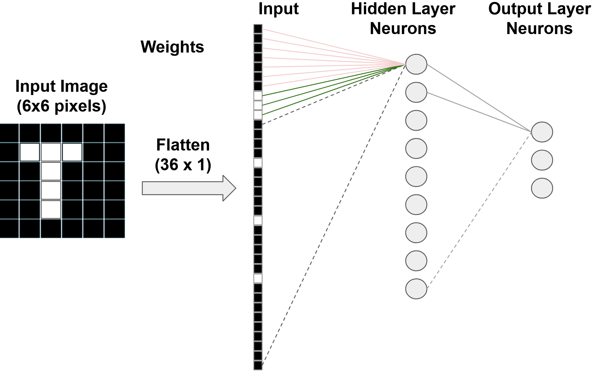
In the CIFAR-10 dataset, which consists of very small images of \(\in \mathbb{R}^{3 \times 32 \times 32}\), a single neuron in the first hidden layer already has \(3 \times 32 \times 32 = 3{,}072\) weights to learn (see Figure 3). For larger images, the number of weights is correspondingly much larger.
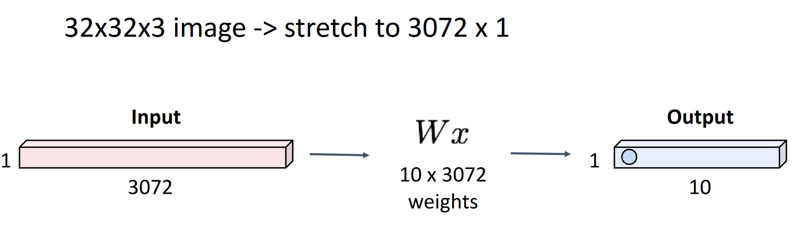
Since each neuron in the first hidden layer is connected to each input value and each connection has a specific weight, the weights of individual neurons (columns of \(\mathbf{W}\)) can be reshaped to the image dimensionality and thus be visualized. This reveals the patterns a specific neuron is reacting to. See Figure 4 for an illustration.
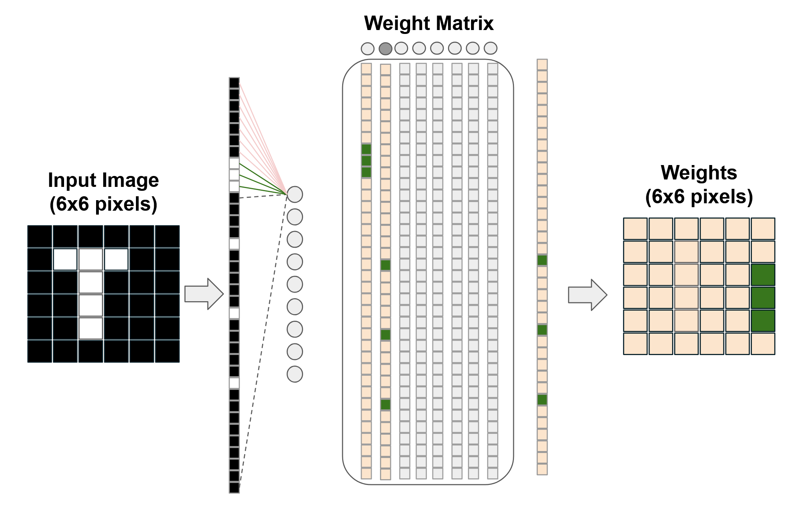
Often the patterns we want to learn are not stationary. Ideally we want to recognize them under translations of the inputs, e.g., \(g(\mathbf{x})\) where \(g()\) is a spatial translation. Figure 5 illustrates the problem, where the same pattern appears at different spatial positions.
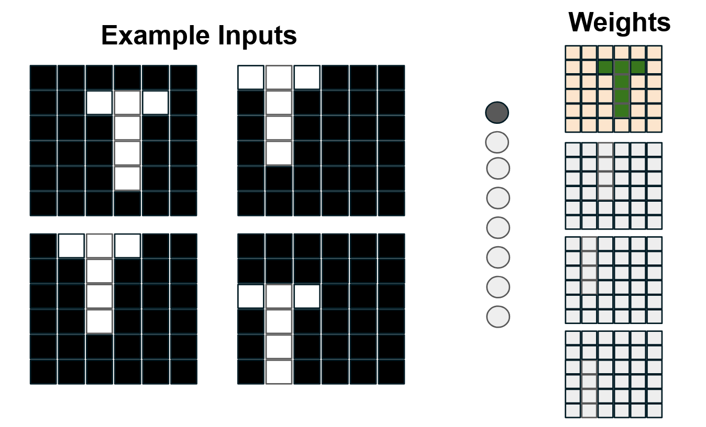
Can an MLP learn to detect the same pattern at different spatial locations? If yes, how? See Figure 5.
Think about it: If an MLP learns to detect a cat in the center of an image, what happens when the same cat appears in the corner?
Click for answer
MLPs must learn separate detectors for each possible position! This is extremely inefficient because:
- Parameter explosion: Need different weights for each spatial location
- Data requirements: Must see target pattern in every possible position during training
- Poor generalization: Fails on positions not seen during training
To summarize, MLPs have three fundamental limitations on images:
- High-Dimensional: The size of an MLP scales with the input dimensionality, which may exceed memory and compute budgets.
- No Locality: MLPs have no notion of locality and thus cannot exploit the inherent spatial structure of natural images.
- No Stability under Translations: MLPs need to learn position-dependent patterns, which is very inefficient.
Try to draw the same digit at different positions and observe what happens!
1.2 Invariance and Equivariance
For many tasks involving image data, small variations in the input (\(\mathbf{x}\)) should either not change the model output (\(f(\mathbf{x})\)), invariance, or should change the output in tandem with the input changes, equivariance.
A function \(f(\mathbf{x})\) is invariant to transformation \(g(\mathbf{x})\) if: \[f(g(\mathbf{x})) = f(\mathbf{x})\]
A function \(f(\mathbf{x})\) is equivariant to transformation \(g(\mathbf{x})\) if: \[f(g(\mathbf{x})) = g(f(\mathbf{x}))\]
- Invariant = “I don’t care about the transformation”
- Equivariant = “I transform my output the same way the input was transformed”
Figure 6 shows an example of image classification. The scene is the same across all four panels, but each one applies a different type of perturbation: a spatial shift, a color change, or a rotation. The classifier should still produce the same label (“cow”) in every case — it should be invariant to these nuisance transformations.
Figure 7 shows the analogous situation for object detection. The bounding boxes translate together with the cows — this is translation equivariance.
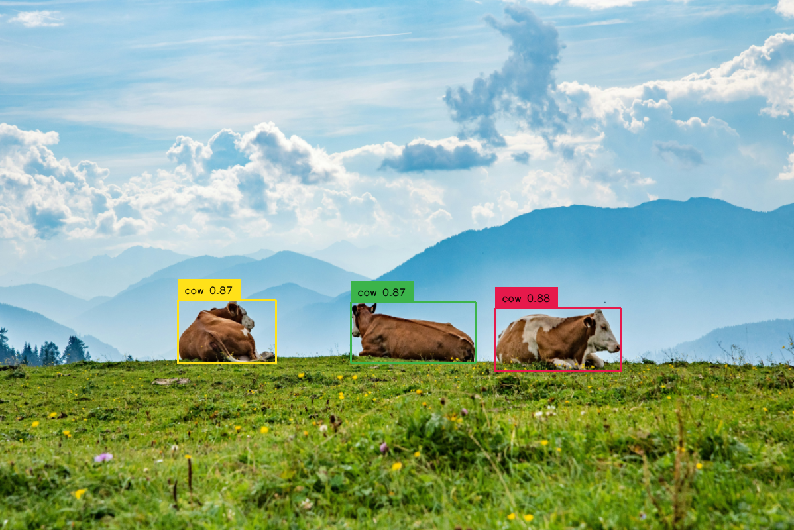
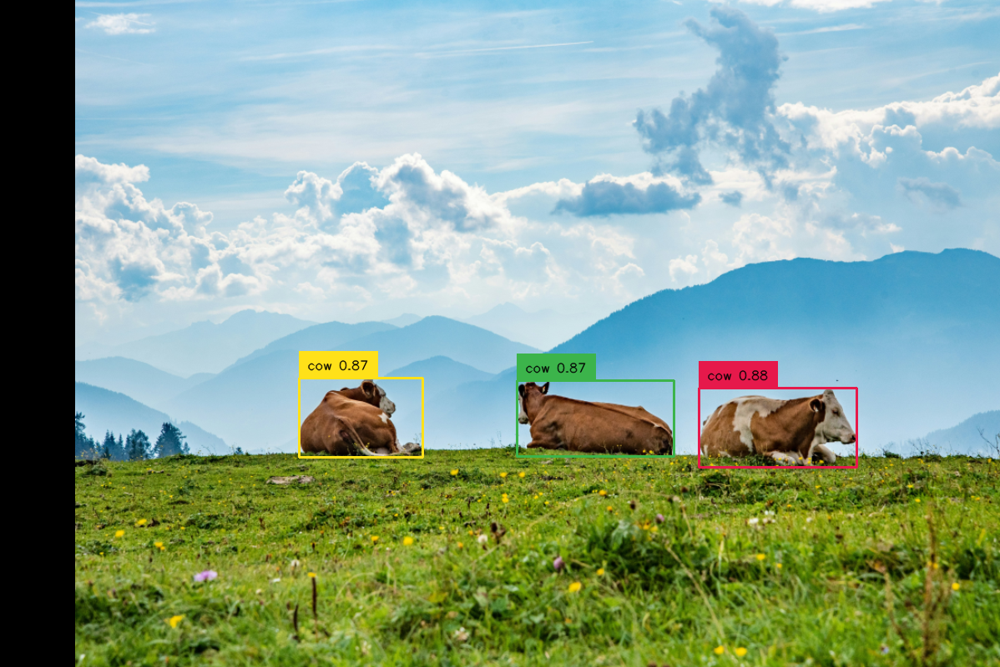
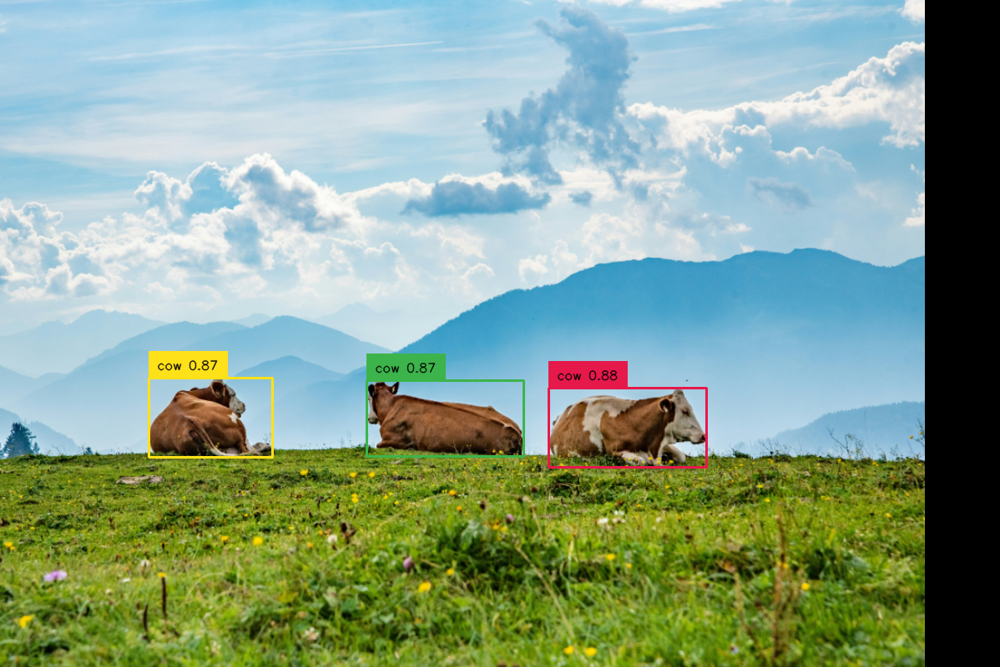
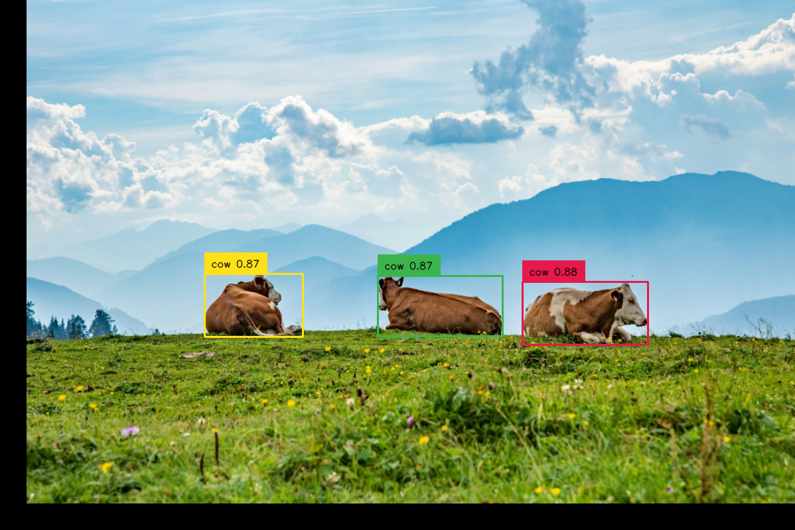
We can summarize the required properties for different tasks:
| Task Type | Property Needed | Why? |
|---|---|---|
| Classification | Translation Invariance | A cat is still a cat regardless of position |
| Object Detection | Translation Equivariance | If the object moves right, the bounding box moves right |
| Semantic Segmentation | Translation Equivariance | If the input shifts, pixel-wise labels shift |
1.3 The CNN Idea
Now that we have seen the limitations of MLPs for images, let’s explore how Convolutional Neural Networks (CNNs) address these challenges.
Instead of connecting every neuron to every input, CNNs use three key principles:
- Local Connectivity: Each neuron only looks at a small spatial region
- Parameter Sharing: The same filter/detector is used across all spatial locations
- Translation Equivariance: If the input shifts, the output shifts correspondingly
These are not just technical tricks: they encode our prior knowledge about how images work!
A single neuron in a CNN is only connected to a small portion of the image (local connectivity), as illustrated in Figure 8. As a result, CNNs have far fewer parameters than MLPs, preserve the spatial structure of images, and can detect the same feature anywhere in the image.
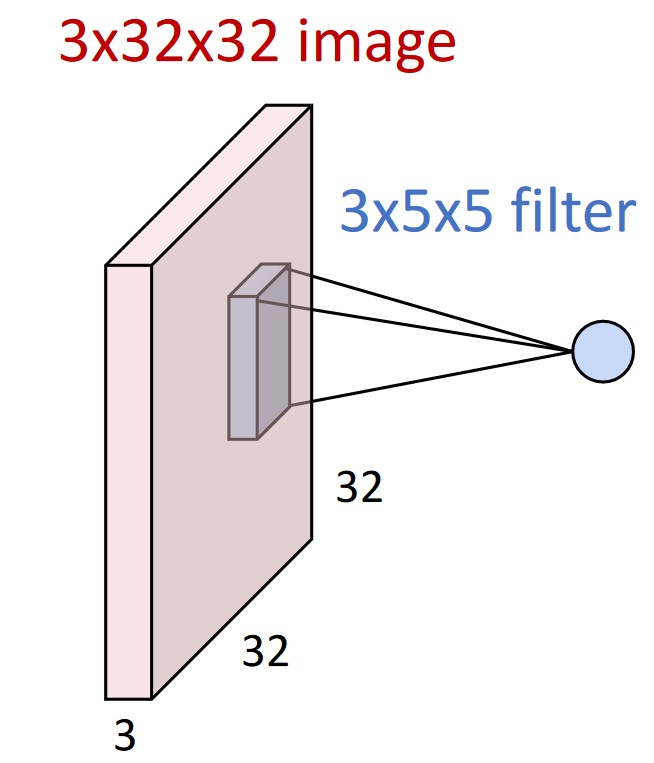
1.4 Inductive Bias
The concept of inductive bias refers to the assumptions a learning algorithm makes to generalize from training data to unseen data. MLPs have minimal inductive bias, they are very general, but require large amounts of training data. CNNs have strong inductive biases: they assume locality and translation equivariance, which makes learning on images vastly more efficient.
The right inductive bias for the data at hand is key to success. This is why CNNs excel at images (spatial locality matters), Transformers excel at sequences (long-range dependencies matter), and Graph Neural Networks excel at networks (graph structure matters). Choosing an architecture means choosing which assumptions to bake in.
2 How CNNs Work
CNNs consist of a sequence of different layers. Each layer transforms activations from the previous layer into new activations through a differentiable operation. Figure 9 shows an example architecture with the activation maps of the various layers.

2.1 Convolution Operation
Convolutional layers are the primary layers in CNNs, responsible for extracting visual features. Each filter is typically small along the spatial dimensions (height, width) relative to the input but extends across the entire input depth. During the forward pass, the filters are convolved along the height and width over the input. At each position, the dot product between the filter and input is calculated, producing a 2-D activation map that represents the filter’s response at each position. Intuitively, the CNN learns filters corresponding to typical visual patterns, such as edges and colors, in the first layer.
Filter and kernel are sometimes used synonymously. Here, we differentiate by considering a filter as 3-dimensional (\(C \times H \times W\)) and a kernel as 2-dimensional (\(H \times W\)). A filter consists of \(C\) kernels.
The convolution operation is defined as:
\[ S(i, j) = (K * I)(i, j) =\sum_m\sum_n I(i + m, j + n)K(m, n) \tag{1}\]
where \(I\) is the input, \(K\) is the kernel (typically smaller than \(I\)), and \(i\), \(j\) index the spatial positions.
Convolution in deep learning is typically implemented as cross-correlation. Equation 1 actually defines cross-correlation.
Figure 10 illustrates convolution on an RGB image. The filter is multiplied element-wise with the corresponding values in the image, and the result is summed to produce one single value in the output.
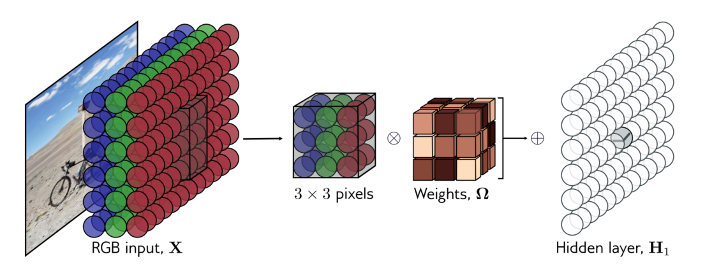
Figure 11 illustrates how a single filter is applied: at each spatial position, the filter is placed over the corresponding input patch, the element-wise product is summed, the bias is added, and the result becomes one value in the output activation map. Sliding the filter across all positions fills in the full map.
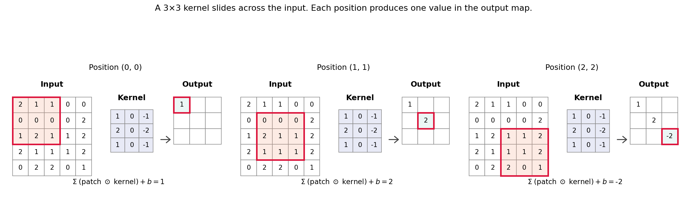
For RGB inputs (or any input with multiple channels), the filter has a matching depth: a \(3 \times 3\) filter on a 3-channel input is actually a \(3 \times 3 \times 3\) volume. Each slice is applied to the corresponding input channel, and the per-channel sums are added together with a single bias term, producing one scalar per spatial position. This is shown in Figure 12.
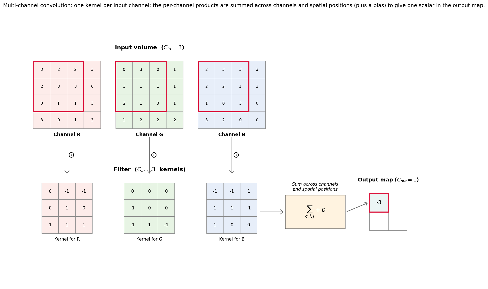
A convolutional layer typically contains several filters, each with its own weights and bias. Each filter produces one activation map, and stacking these maps along the channel axis yields an output volume with \(C_\text{out}\) channels — effectively a multi-channel image. Figure 13 illustrates this for four filters. In practice, data is processed in mini-batches of \(N\) images at once, so the convolution operates on a 4-D input tensor of shape \(N \times C_\text{in} \times H \times W\) and returns a 4-D output of shape \(N \times C_\text{out} \times H' \times W'\).
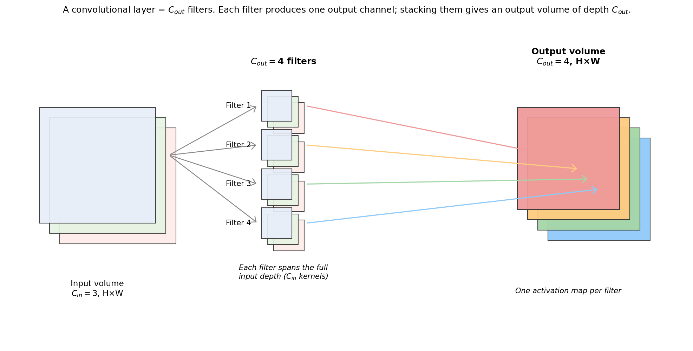
2.2 Translation Equivariance
Because the same filter is applied at every spatial position (parameter sharing), convolutions are naturally translation equivariant. The following video illustrates this property:
See Section 1.2 for the distinction between equivariance and invariance. Notably, CNNs need additional components (like pooling or global average pooling) to achieve translation invariance for classification tasks.
2.3 Padding, Stride, Kernel Size, Dilation
To define a convolution, various hyperparameters need to be set.
Stride determines the step size with which filters are moved over the input activations. If the stride is 1, the filter moves one pixel at a time (Figure 15). If the stride is greater, e.g., 2, it moves two pixels at a time, making the activation maps smaller (Figure 16).
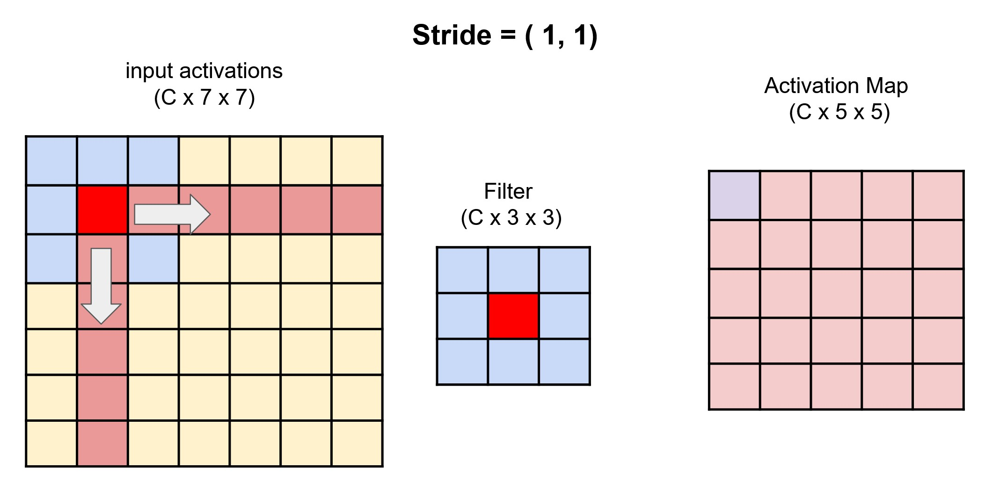
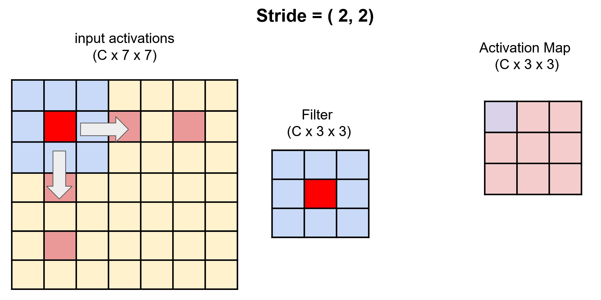
Convolutions with stride provide a way to reduce the spatial dimensionality within a CNN. The downsampling is learned, which can be advantageous over fixed operations like pooling.
Padding refers to adding values (often zeros) to the border of the input activations before performing the convolution. This can be useful to ensure that the spatial dimensions of the output match those of the input — essential for segmentation tasks. Figure 17 illustrates how padding helps maintain spatial resolution.
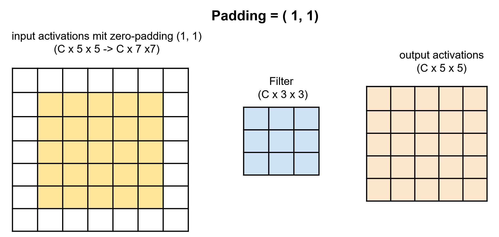
Kernel size determines the spatial extent from which a value in the output activation map aggregates values. Figure 18 and Figure 19 show convolutions with different kernel sizes. Kernels usually have an odd number of pixels to ensure they have a center pixel. The number of parameters increases with kernel size.
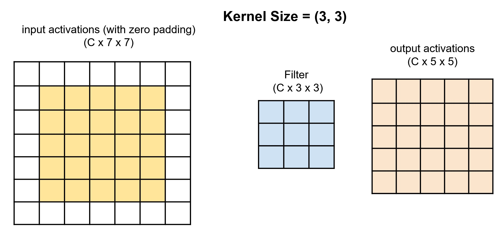
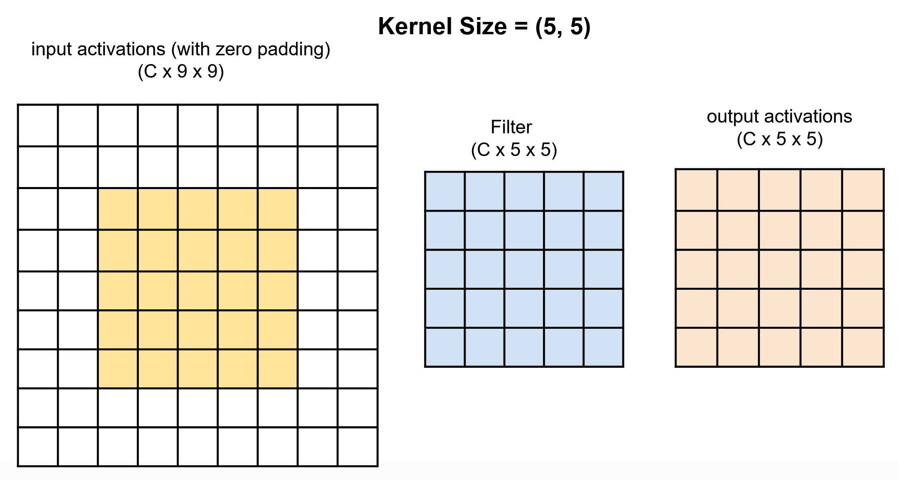
Modern CNN Design: Use multiple 3×3 convolutions instead of larger kernels. This yields fewer parameters, more non-linearity (more activation functions between layers), and similar receptive field coverage.
Dilation specifies how much the kernel is spread out and thus directly influences the receptive field. Figure 20 illustrates how a dilated kernel is applied.
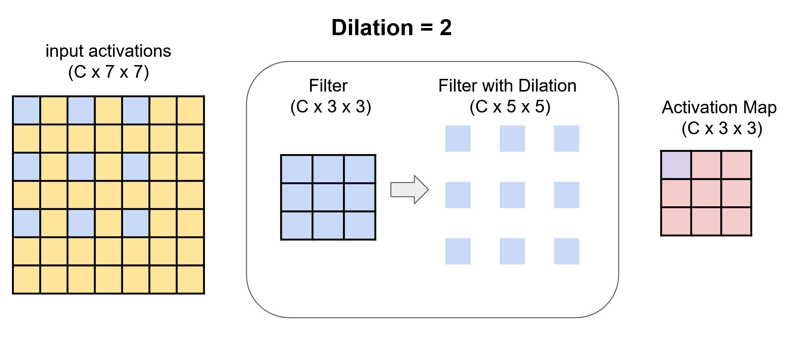
Dumoulin and Visin (2016) has created animations for better understanding of convolutions: https://github.com/vdumoulin/conv_arithmetic.

Why would we use dilation \(d > 1\)?
Consider: What happens to the receptive field? What about computational cost?
Click for comprehensive answer
Dilation increases receptive field without adding parameters or computation!
Benefits of dilation:
- Larger receptive field: See more context without more layers
- Same parameter count: Filter size stays the same
- Multi-scale features: Different dilation rates capture different scales
Use cases:
- Semantic segmentation: Need large receptive fields while preserving spatial resolution
- Dense prediction tasks: Want to see global context for local predictions
- Efficient architectures: Alternative to deeper networks
Trade-offs:
- ✅ Larger receptive field with same parameters
- ❌ May miss fine-grained spatial relationships
- ❌ Can create “grid artifacts” if not used carefully
Example: A 3×3 kernel with dilation=2 has the receptive field of a 5×5 kernel but only 9 parameters instead of 25!
Atrous/Dilated Convolutions are especially popular in:
- DeepLab (semantic segmentation)
- WaveNet (audio generation)
- Dilated ResNets (dense prediction)
The key insight: effectively expand the receptive field!
2.4 Calculations: Spatial Dimensionality of Activation Maps
You can calculate the dimensionality of the activation maps with the following formulas:
- \(i\): Side length of the input activations (assumption: square inputs)
- \(k\): Kernel size (assumption: square kernel)
- \(o\): Side length of the output activation maps
- \(s\): Stride (assumption: same stride along spatial dimensions)
- \(p\): Number of paddings on each side (assumption: same number of paddings along spatial dimensions)
- \(d\): Dilation rate.
\[\begin{equation} o = \left\lfloor \frac{i + 2p - d\cdot(k-1) - 1}{s} + 1 \right\rfloor \end{equation}\]
Problem: You’re designing a CNN layer with the following parameters:
- Input size: \(i = 32\) (height and width)
- Kernel size: \(k = 3\)
- Padding: \(p = 1\)
- Stride: \(s = 2\)
- Dilation: \(d = 1\)
Question: What is the output size \(o\)?
Click for step-by-step solution
Step-by-step solution:
- Apply the formula: \(o = \lfloor \frac{i + 2p - d(k-1) - 1}{s} + 1 \rfloor\)
- Substitute: \(o = \lfloor \frac{32 + 2(1) - 1(3-1) - 1}{2} + 1 \rfloor\)
- Simplify: \(o = \lfloor \frac{32 + 2 - 2 - 1}{2} + 1 \rfloor\)
- Calculate: \(o = \lfloor \frac{31}{2} + 1 \rfloor = \lfloor 15.5 + 1 \rfloor = 16\)
Answer: \(o = 16\)
Intuition: With stride 2, we’re roughly halving the spatial dimensions, but padding helps maintain some size.
2.5 Parameter Counting
The total number of parameters in a convolutional layer can be calculated as:
\[ \text{Total Weights} = (k \times k) \times C_{in} \times C_{out} \]
Each filter has a size of \(k \times k \times C_{in}\), and there are \(C_{out}\) filters. If each output channel has a bias term, add an additional \(C_{out}\):
\[ \text{Total Parameters} = (k \times k \times C_{in} \times C_{out}) + C_{out} \]
Scenario: A convolutional layer with:
- Input: \(3 \times 32 \times 32\) (RGB image)
- 64 output channels
- Kernel size: \(5 \times 5\)
- Include bias terms
Questions:
- How many weights in the filters?
- How many bias parameters?
- Total parameters?
- If we used a fully connected layer instead, how many parameters would that require?
Click for solutions
- Filter weights: \((5 \times 5) \times 3 \times 64 = 4{,}800\)
- Bias parameters: \(64\) (one per output channel)
- Total parameters: \(4{,}800 + 64 = 4{,}864\)
- Fully connected alternative: \((32 \times 32 \times 3) \times 64 = 196{,}608\)
Insight: The CNN uses 40× fewer parameters while being more effective for images!
2.6 Stacking Convolutions and Hierarchical Features
Multiple convolutions can be executed in sequence (stacking). Each convolution is performed on the activation maps of the preceding convolution. Figure 21 illustrates the process.
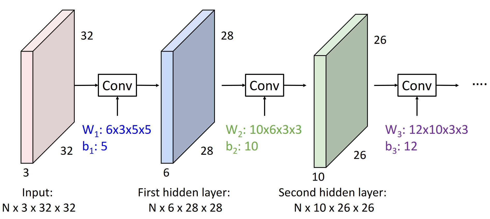
The principle of stacking convolutional layers is important to understand. While the filters in the first convolutional layer, which directly operate on the input image, typically learn basic features such as lines in different orientations or colors, filters in subsequent layers learn more complex features by combining the features from preceding layers. This is similar to the hierarchical processing in our visual cortex. Zeiler and Fergus (2014) used a special technique to visualize patterns that filters in deeper layers are reacting to (see Figure 22).
Non-linear activation functions must be used between the convolutions. Otherwise, the stacked convolutions can be expressed as a single convolution (similar to how an MLP without activation functions reduces to a linear transformation).
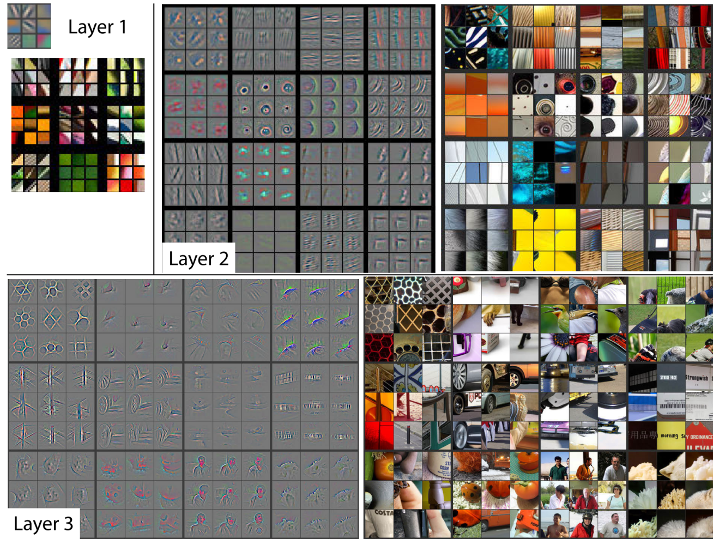
2.7 Receptive Field
The receptive field defines which inputs influence the activations of a neuron. If the receptive field with respect to the input image is smaller than the objects of interest, the network is unable to “see” the whole object. Figure 23 and Figure 24 illustrate the concept.
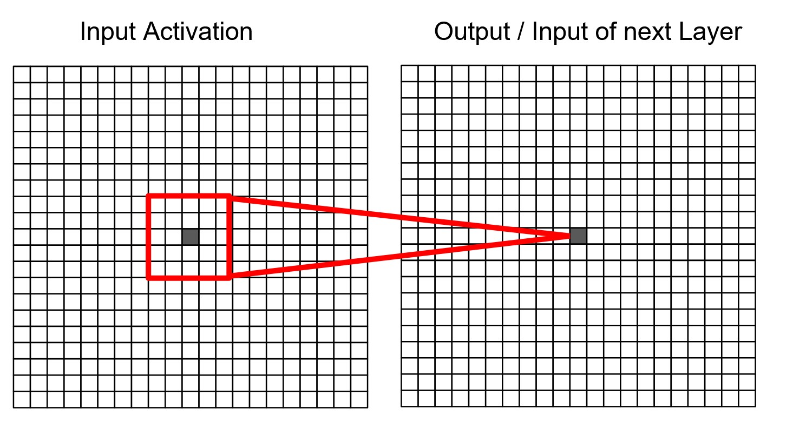
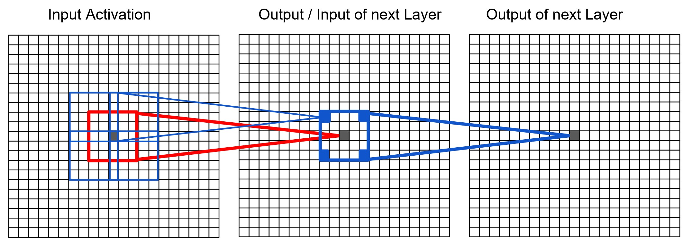
The receptive field \(r_0\) of a CNN can be calculated with the following closed-form solution:
\[ r_0 = \sum_{l=1}^L \left( (k_l - 1) \prod_{i=1}^{l-1} s_i \right) + 1 \]
where \(L\) is the total number of layers, \(k_l\) is the kernel size at layer \(l\), and \(s_i\) is the stride at layer \(i\). See Araujo et al. (2019) for more details on the notation and derivation.
Network Architecture:
- Layer 1: Conv2d(kernel=3, stride=1)
- Layer 2: Conv2d(kernel=3, stride=2)
- Layer 3: Conv2d(kernel=5, stride=1)
Question: What is the receptive field of the final layer with respect to the input?
Click for solution
Solution using the formula: \[r_0 = \sum_{l=1}^3 \left( (k_l - 1) \prod_{i=1}^{l-1} s_i \right) + 1\]
- \(r_0 = (3-1) \cdot 1 + (3-1) \cdot 1 + (5-1) \cdot (1 \cdot 2) + 1\)
- \(r_0 = 2 + 2 + 8 + 1 = 13\)
Answer: \(13 \times 13\) receptive field.
Practical insight: Each output pixel “sees” a \(13 \times 13\) region of the input image.
2.8 Additional Layers and Operations
CNNs often include layers beyond convolutions, each with a specific purpose.
Pooling provides spatial downsampling. Common variants include max-pooling (takes the maximum value in each window) and average-pooling (takes the mean). Figure 25 illustrates these operations.
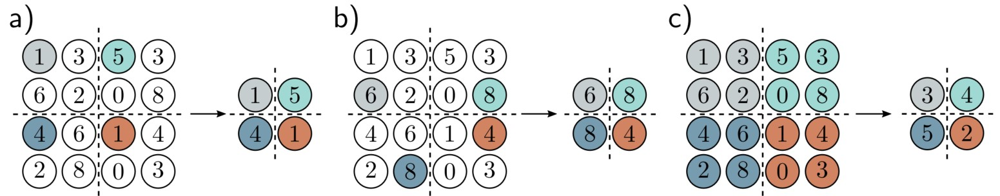
1×1 Convolutions have a kernel size of 1×1 and thus no spatial extent. They are used to change the number of channels (\(C\)) with few parameters. For example, activation maps of dimensionality (\(C \times H \times W\)) can be changed to (\(C_2 \times H \times W\)) using only \(C_2 \times (C + 1)\) parameters. This is useful to reduce dimensionality before more complex layers or to adjust the number of channels to match the number of classes in a classification head.
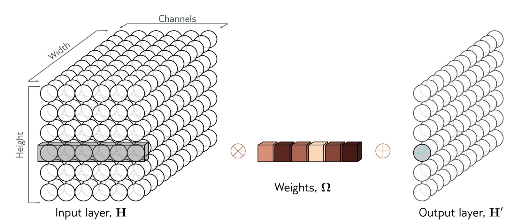
Global Average Pooling computes the average of each activation map, reducing the tensor from \((C \times H \times W)\) to \((C \times 1 \times 1)\). This is useful for classification — if \(C\) equals the number of classes, the network can produce logits without any fully-connected layers. Global average pooling also provides translation invariance: since the spatial information is averaged away, the output does not depend on where features appear in the image.
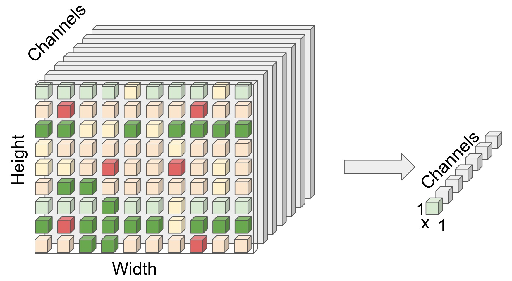